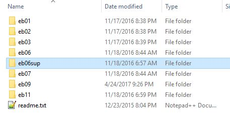

Archive Folder
This is our long-term storage for original image files of print editions of the Encyclopedia. We never modify these files. Instead, we copy them to the production/images folder for active use.
The original image files for the project are stored in the primary archive at
eb-corpus/archive. These include scans of additional eb
editions as well as alternate scans of several production editions. We copy files
from eb-corpus/archive to the
eb-corpus/production/images folder, once we have selected
the images we need for current production.
Note: Think of the
eb-corpus/archive folder as a book store, while
eb-corpus/production/images is a bookcase with just the
books we want to read.
Figure: archive folder
